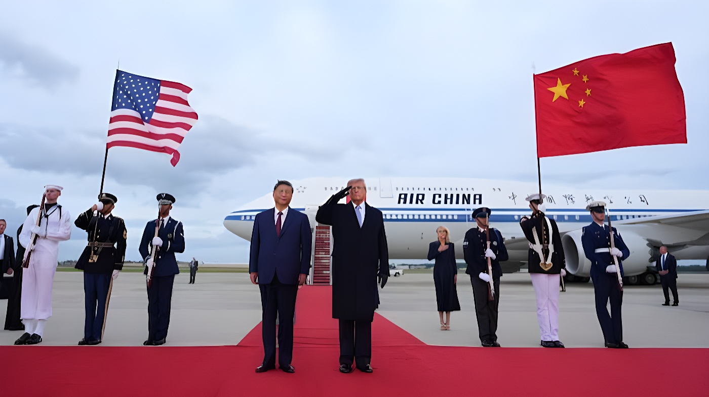

Du 23 au 25 septembre 2026, le président chinois Xi Jinping a effectué sa première visite d'État à Washington en onze ans, reçu par Donald Trump à la Maison-Blanche. Entre cérémonie d'accueil fastueuse, dîner d'État et annonce de nouveaux pandas pour le zoo d'Atlanta, la rencontre — la troisième entre les deux dirigeants en moins d'un an — a surtout prolongé la trêve commerciale sino-américaine, sans lever les désaccords de fond sur Taïwan, l'intelligence artificielle ou les terres rares.
Xi Jinping et son épouse Peng Liyuan sont arrivés le mercredi 23 septembre 2026 à la base aérienne d'Andrews, dans le Maryland, où Donald Trump les a accueillis personnellement sur le tarmac — un geste qu'aucun président américain n'avait plus réservé à un dirigeant étranger depuis 1962. Le lendemain matin, une cérémonie d'accueil officielle s'est tenue sur la pelouse Sud de la Maison-Blanche, mobilisant 479 militaires représentant l'ensemble des forces armées américaines, avant un entretien bilatéral au Bureau ovale puis une revue militaire dans le jardin des Roses.
Ce déploiement de faste marque le retour de Xi Jinping à la Maison-Blanche onze ans après sa précédente visite d'État, en septembre 2015, et fait suite au déplacement de Donald Trump à Pékin en mai 2026. C'est la troisième rencontre entre les deux dirigeants en moins d'un an, après le sommet de Busan en Corée du Sud fin octobre 2025 et le sommet de Pékin en mai 2026.
« Le président Xi et moi avons forgé une grande amitié, bâtie sur le respect mutuel. »
— Donald Trump, président des États-Unis, Maison-Blanche, 24 septembre 2026Arrivée à la base aérienne d'Andrews, accueil personnel de Donald Trump sur le tarmac.
Cérémonie d'accueil officielle sur la pelouse Sud de la Maison-Blanche.
Entretien bilatéral au Bureau ovale, puis revue militaire dans le jardin des Roses.
Dîner d'État en présence de dirigeants de la tech et de l'industrie américaines.
Thé privé, visite des Archives nationales, puis départ de la délégation chinoise.
Sur le plan économique, le secrétaire au Trésor Scott Bessent a annoncé, à la veille de la visite officielle, la prolongation de la trêve commerciale sino-américaine jusqu'au 10 janvier 2027, soit deux mois de plus que l'accord conclu après le sommet de Busan fin octobre 2025. Cette trêve maintenait déjà les droits de douane américains sur les produits chinois autour de 47 %, contre 57 % auparavant, en échange d'un assouplissement chinois sur les exportations de terres rares et d'engagements sur le fentanyl et les achats agricoles.
Mais selon plusieurs médias américains, la visite de Washington n'a débouché sur aucun nouvel engagement chiffré ni sur un accord formel concernant l'intelligence artificielle, Taïwan ou la guerre en Iran, sujets pourtant évoqués par les deux délégations. Les observateurs ont largement décrit ces trois jours comme davantage marqués par le protocole que par des décisions concrètes.
Lors de la cérémonie d'accueil, Xi Jinping a annoncé l'envoi prochain de deux pandas géants, Ping Ping et Fu Shuang, au zoo d'Atlanta, ainsi que de nouveaux programmes d'échanges universitaires permettant à des étudiants américains d'étudier en Chine. Sur l'intelligence artificielle, sujet abordé lors des entretiens, le dirigeant chinois a plaidé pour une coexistence entre les deux puissances technologiques plutôt qu'une confrontation frontale, sans qu'un cadre commun de régulation ne soit annoncé à l'issue de la visite.
| Événement | Date | Ce qu'il révèle |
|---|---|---|
| Accueil sur le tarmac d'Andrews | 23 sept. 2026 | Geste protocolaire rarissime de Trump |
| Cérémonie officielle | 24 sept. 2026 | 479 militaires, faste diplomatique maximal |
| Annonce des pandas | 24 sept. 2026 | Retour de la « diplomatie du panda » |
| Prolongation de la trêve commerciale | 24 sept. 2026 | Trêve étendue jusqu'au 10 janvier 2027 |
« Les Américains n'aiment pas forcément la Chine, mais ils aiment les pandas. »
— Wu Xinbo, directeur du Centre d'études américaines, université FudanEn recevant Xi Jinping avec un faste inédit depuis plus d'une décennie, Donald Trump a surtout mis en scène une relation sino-américaine que les deux capitales cherchent à stabiliser sans la pacifier. La prolongation de la trêve commerciale jusqu'à janvier 2027 offre un répit économique, mais elle laisse intacts les dossiers les plus sensibles — Taïwan, terres rares, encadrement de l'intelligence artificielle — que ni Busan, ni Pékin, ni Washington n'ont permis de trancher. Trois sommets en onze mois disent moins une réconciliation qu'une gestion prudente et méthodique d'une rivalité que ni Washington ni Pékin ne semblent en mesure, ni pressés, de résoudre.
From September 23 to 25, 2026, Chinese President Xi Jinping made his first state visit to Washington in eleven years, received by Donald Trump at the White House. Between a grand arrival ceremony, a state dinner and the announcement of new pandas for Zoo Atlanta, the meeting — the two leaders' third in under a year — mainly extended the Sino-American trade truce, without resolving underlying disagreements over Taiwan, artificial intelligence or rare earths.
Xi Jinping and his wife Peng Liyuan arrived on Wednesday, September 23, 2026, at Joint Base Andrews in Maryland, where Donald Trump personally greeted them on the tarmac — a gesture no U.S. president had extended to a foreign leader since 1962. The following morning, an official arrival ceremony was held on the White House South Lawn, involving 479 military personnel representing all branches of the U.S. armed forces, followed by bilateral talks in the Oval Office and a military review in the Rose Garden.
This display of pageantry marks Xi Jinping's return to the White House eleven years after his previous state visit, in September 2015, and follows Donald Trump's trip to Beijing in May 2026. It is the third meeting between the two leaders in under a year, after the Busan summit in South Korea in late October 2025 and the Beijing summit in May 2026.
"President Xi and I have forged a great friendship, built on mutual respect."
— Donald Trump, President of the United States, White House, September 24, 2026Arrival at Joint Base Andrews; Donald Trump personally greets Xi on the tarmac.
Official arrival ceremony on the White House South Lawn.
Bilateral talks in the Oval Office, followed by a military review in the Rose Garden.
State dinner attended by leading American tech and industry figures.
Private tea, a tour of the National Archives, then the Chinese delegation's departure.
On the economic front, Treasury Secretary Scott Bessent announced, on the eve of the official visit, that the Sino-American trade truce would be extended until January 10, 2027 — two months beyond the agreement reached after the Busan summit in late October 2025. That truce already kept U.S. tariffs on Chinese goods around 47%, down from 57%, in exchange for Chinese easing on rare-earth exports and commitments on fentanyl and farm purchases.
But according to several U.S. outlets, the Washington visit produced no new quantified commitments and no formal agreement on artificial intelligence, Taiwan or the Iran war, even though both delegations reportedly discussed them. Observers largely described the three days as driven more by protocol than by concrete decisions.
During the arrival ceremony, Xi Jinping announced that two giant pandas, Ping Ping and Fu Shuang, would soon be sent to Zoo Atlanta, alongside new university exchange programs allowing American students to study in China. On artificial intelligence, a topic raised during the talks, the Chinese leader called for the two tech powers to coexist rather than confront each other head-on, though no shared regulatory framework was announced at the end of the visit.
| Event | Date | What it shows |
|---|---|---|
| Tarmac welcome at Andrews | Sept. 23, 2026 | Rare protocol gesture from Trump |
| Official ceremony | Sept. 24, 2026 | 479 troops, maximum diplomatic pageantry |
| Panda announcement | Sept. 24, 2026 | Return of "panda diplomacy" |
| Trade truce extended | Sept. 24, 2026 | Truce extended to January 10, 2027 |
"Americans may not like China, but they will certainly like pandas."
— Wu Xinbo, Director, Center for American Studies, Fudan UniversityBy receiving Xi Jinping with a pageantry unmatched in more than a decade, Donald Trump mainly staged a Sino-American relationship both capitals are trying to stabilize rather than resolve. Extending the trade truce to January 2027 buys economic breathing room, but leaves untouched the most sensitive files — Taiwan, rare earths, AI oversight — that neither Busan, nor Beijing, nor Washington managed to settle. Three summits in eleven months speak less of reconciliation than of a careful, methodical management of a rivalry that neither Washington nor Beijing seems able, or in a hurry, to resolve.